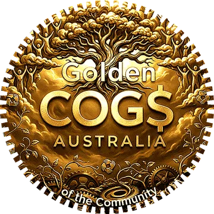
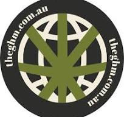

Help carry the vision forward.
You have chosen to go deeper. Whether you want to donate to the Foundation, pay it forward for others who cannot afford to join, reserve COG$ classes for the future, or simply understand how your support builds lasting community value — you are in the right place.
Worth its weight in gold.
There are many ways to help build COGs of Australia Foundation — and none of them require wealth. What they require is interest, care, and the willingness to show up. Time and skills from anywhere in Australia are genuinely valued. The Foundation is a national project and it needs people everywhere who believe in what it is trying to do.
Talk about it
The most powerful thing any Member can do is have an honest conversation with someone who has not heard of this yet. Not a sales pitch — a conversation. Tell them what it is, what drew you to it, and let them make up their own mind. Word of mouth, person to person, is how a genuine community grows.
Write, create, translate
Can you write clearly, design simply, or translate into a language other than English? The Foundation needs people who can explain complex ideas in plain language — for different audiences, communities, and parts of the country. That is a real and lasting contribution.
Legal, compliance, regulatory
The Foundation is working through ASIC Innovation Hub engagement, ATO class rulings, trust deed refinement, and regulatory compliance. If you have background in financial services law, trust law, community joint venture structures, or regulatory compliance, your knowledge is genuinely useful at any stage.
Government and policy
Discussions with parliamentarians have already begun. If you work in government, policy, or have relationships with elected representatives at any level — federal, state, or local — there is a meaningful role in helping this conversation reach the places where decisions are made.
First Nations community connection
57.8% of Australia's critical mineral projects sit within formally recognised Indigenous lands. The Foundation's FNAC is central to its governance — not decorative. If you have existing relationships, lived experience, or relevant cultural knowledge, that connection is foundational to what this project is trying to build.
Technology, blockchain, and AI
The planned rollout involves a permissioned EVM blockchain architecture, smart contracts, multi-signature wallet infrastructure, and AI-assisted governance tools. If you have skills in Hyperledger Besu, Solidity, EVM tooling, or AI agent development, there is meaningful technical work ahead.
Community organising
Organising a conversation, hosting a local information session, connecting the Foundation with community groups, landholders, farmers, or regional networks — these are not small things. The Foundation is national in ambition but must be local in practice. If you can open a door in your town, region, or industry, please do.
Research and documentation
There is ongoing work in mining tenement research, ESG assessment of ASX-listed resource companies, First Nations land mapping, geofencing specification, and real-world asset valuation. If you have research skills or access to relevant datasets, your contribution matters.
Media, journalism, and storytelling
The story of community ownership of Australia's resource sector deserves to be told well and widely. If you work in media, journalism, podcasting, documentary, or community radio — and you believe this is a story worth covering — we would like to hear from you.
"Worth its weight in gold" means exactly that.
If you have time, skills, or knowledge — and you believe that Australians should have a real, lawful say in what happens to the resources beneath their land — then you already have something worth contributing. Contact us directly and tell us what you can offer.
Get in touch — hello@cogsaustralia.orgThere are also financial ways to contribute.
These are optional pathways available when you join. They sit alongside your membership — they are not a substitute for it, and they are not required.

Donation COG$
Each $4.00 Donation token splits as follows: $2.00 paid directly to Sub-Trust C (the community projects fund) at the time of issue; $2.00 invested through Sub-Trust A in the Members Asset Pool, with Sub-Trust C registered as the income unit holder. Not currently tax-deductible; ATO product ruling is being sought.
Add when you join →Pay It Forward
Fund a joining fee for someone who cannot afford the $4 — people experiencing hardship, former state wards, concession card holders, First Nations community Members facing documentation barriers. Each $4 token enables one free S-NFT membership. Annual cap of $40,000 per donor.
Add when you join →Reserve COG$ classes
Record your intent for ASX COG$, RWA COG$, or Landholder COG$ classes — no payment today, no obligation. These investment-linked classes are issued only on Expansion Day — when the first Sovereign Node goes live, as certified by the Board and endorsed by the First Nations Advisory Council — subject to any regulatory requirements determined by applicable law. Cancel or adjust anytime in your Independence Vault.
Reserve when you join →Join for $4. Then help from inside.
Whether you are here to contribute your time, skills, or financial support — securing your personal membership first is the most useful thing you can do right now. Once you are in, every other pathway opens from your Independence Vault.
All the ways to get involved
Time, skills, and community connections are just as valuable as financial contribution. Here is everything at a glance.
Honouring those who helped carry the vision.
A serious community structure should stop occasionally and recognise the people, movements, and organisations whose contribution helped make this community possible. These honours are permanent. They are not awards for donors. They are recognition for people and organisations who helped shape the thinking, the values, and the direction that COGs of Australia Foundation is built upon.


The Global Hemp Movement
For showing what stewardship can look like when a community and a resource are treated as living relationships, not just commodities.
The Global Hemp Movement embodied values that sit close to the heart of COG$: regeneration, practical stewardship, and the belief that communities should participate meaningfully in the future of the land and resources they live with. The movement demonstrated that it is possible to build a serious, patient community around a resource question — and to hold that position with dignity across time, across hostility, and across indifference.
That alignment of purpose is rare. COGs of Australia Foundation borrows from the same spirit — not the specific cause, but the posture: that community standing in relationship to a resource, governed by stewardship rather than extraction, and held together by trust rather than price, is not idealism. It is practical architecture for a more durable kind of value.
Presented with gratitude for shared values and early support of the stewardship model that COGs of Australia Foundation is built upon.

The Maid
Anonymous by name, unforgettable by contribution.
Some people strengthen a project by asking the questions no one else thought to ask, and by listening with unusual care. These contributions rarely appear in founding documents. They do not attach to credits or titles. They happen in the space between ideas — in the conversations that run long after the formal ones end, in the willingness to push back and then push again, in the discipline of a listener who takes the work seriously enough to interrogate it honestly.
This recognition is intentionally quiet. It does not name. It does not explain the contribution in the way a press release would. The person it honours did not seek visibility. They sought clarity — and in doing so, they helped a complex structure become more honest about what it was trying to be, and more careful about the gap between intention and design.
The Foundation remembers. And it is better for it.
Awarded for relentless questions and the rare generosity of deep listening. You helped us think more clearly.
Golden COG$ honours are permanent and irrevocable. They are not listed for commercial benefit and they do not imply endorsement of the Foundation's commercial activities. They are civic recognition — the community's way of saying: we remember who helped shape this.